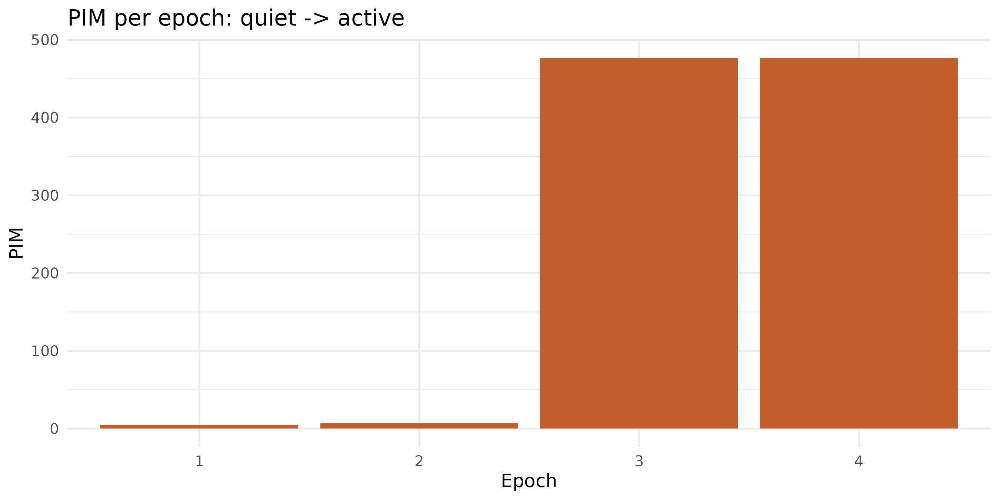

From raw accelerometry to PIM/TAT/ZCM activity counts
Source:vignettes/raw-accelerometry.Rmd
raw-accelerometry.Rmdread_acttrust() reads the PIM/TAT/ZCM counts an ActTrust
device already computed onboard. But some devices and pipelines only
ever hand you raw triaxial acceleration – a GT3X+ raw export, a
research-grade IMU, a signal you’ve captured yourself.
compute_activity_counts() bridges that gap: raw
x/y/z samples in, epoch-level
PIM/TAT/ZCM counts out, ready for estimate_ee()/classify_pa_counts()
the same way read_acttrust()’s output already is.
Read ?compute_activity_counts before using this
on real data. Unlike most of zeitR, this isn’t a validated port
of a reference implementation – there is nothing to validate it against
(Condor’s and ActiGraph’s onboard firmware is proprietary). The help
page is explicit about what’s borrowed from a validated source (the
band-pass filter, via mrpheus) and what isn’t (the PIM/TAT/ZCM
aggregation logic itself). Prefer device-computed counts
whenever they’re available – reach for this function only when
raw samples are genuinely all you have.
The processing chain
- Each axis has its DC offset removed (
mrpheus::remove_dc()) – important for whichever axis is carrying gravity, typically ~1 g – then is band-pass filtered zero-phase (mrpheus::bandpass_filter()). Both are the same filter primitives already validated as part of mrpheus’s YASA-parity PSG pipeline, reused here rather than reimplemented. - A vector norm is computed per sample from the filtered
axes:
sqrt(x^2 + y^2 + z^2)– filter first, then combine, matching the order Batista et al. (2026) describe for ActTrust. - Samples are grouped into non-overlapping epochs
(
epoch_sec * sampling_ratesamples each). - Per epoch: PIM (sum of the absolute filtered norm),
TAT (seconds above
tat_threshold), and ZCM (sign changes beyond azcm_thresholddead-band, summed across the three axes).
A synthetic recording
There’s no bundled raw-accelerometer dataset in zeitR
(inst/extdata’s ActTrust file is already epoch-level, same
as everything read_acttrust() produces) – so this vignette
simulates one: 2 minutes of near-still noise, followed by 2 minutes of
clear 1 Hz movement, at a GT3X+-like 25 Hz.
sr <- 25 # Hz
epoch_sec <- 60
n <- sr * epoch_sec * 4 # 4 epochs total
t <- seq(0, (n - 1) / sr, by = 1 / sr)
set.seed(42)
quiet <- rnorm(sr * epoch_sec * 2, sd = 0.001)
active <- sin(2 * pi * 1 * t[(sr * epoch_sec * 2 + 1):n]) * 0.5
x <- c(quiet, active) # all simulated movement on the x-axis
y <- rep(0, n)
z <- rnorm(n, sd = 0.01) + 1 # ~1 g gravity offset, small sensor noise
counts <- compute_activity_counts(x, y, z, sampling_rate = sr, epoch_sec = epoch_sec)
counts
#> # A tibble: 4 × 4
#> epoch PIM TAT ZCM
#> <int> <dbl> <dbl> <dbl>
#> 1 1 4.91 0 8
#> 2 2 6.65 0.52 6
#> 3 3 477. 57.5 127
#> 4 4 477. 57.6 123The first two (quiet) epochs stay near zero on every metric; the last two (active) epochs show clear PIM, TAT, and ZCM elevation – the sinusoid crosses zero roughly twice per second, so ~120 crossings/epoch on the active x-axis is the expected order of magnitude.
ggplot(counts, aes(x = factor(epoch), y = PIM)) +
geom_col(fill = "#C25E2A") +
labs(x = "Epoch", y = "PIM", title = "PIM per epoch: quiet -> active") +
theme_minimal(base_size = 12)
GT3X+-style filtering instead of ActTrust-style
filter_low/filter_high default to
0.5/2.7 Hz (ActTrust-style, per Batista et
al. 2026). Swap in 0.25/2.5 Hz for GT3X+-style
processing – there’s no separate code path, just different
arguments:
counts_gt3x <- compute_activity_counts(
x, y, z,
sampling_rate = sr, epoch_sec = epoch_sec,
filter_low = 0.25, filter_high = 2.5
)
counts_gt3x
#> # A tibble: 4 × 4
#> epoch PIM TAT ZCM
#> <int> <dbl> <dbl> <dbl>
#> 1 1 5.00 0 4
#> 2 2 6.36 0.16 5
#> 3 3 477. 57.6 125
#> 4 4 477. 57.5 121From counts to PA intensity
The whole point of matching read_acttrust()’s output
shape is that everything downstream stays the same. Feed the
PIM column straight into estimate_ee()/classify_pa_counts()
exactly as you would with device-computed counts (see
vignette("physical-activity") for the full discussion and
caveats of that step):
counts$mets <- estimate_ee(counts$PIM, device = "ACTT", placement = "wrist")
counts$pa_intensity <- classify_pa_intensity(counts$mets)
counts
#> # A tibble: 4 × 6
#> epoch PIM TAT ZCM mets pa_intensity
#> <int> <dbl> <dbl> <dbl> <dbl> <ord>
#> 1 1 4.91 0 8 1.56 light
#> 2 2 6.65 0.52 6 1.57 light
#> 3 3 477. 57.5 127 1.99 light
#> 4 4 477. 57.6 123 1.99 lightTuning zcm_threshold / tat_threshold
Both default to small, physically motivated values
(0.01, 0.05) rather than a calibrated constant
– there is no published reference value to default to. If your sensor’s
noise floor sits close to either threshold, you’ll see it directly: a
noisy “quiet” epoch registering non-zero ZCM/TAT is a sign the threshold
needs raising for your specific hardware, not that the function is
broken.
noisy_quiet <- rnorm(sr * epoch_sec, sd = 0.02) # noisier than the earlier "quiet" segment
compute_activity_counts(
noisy_quiet, rep(0, length(noisy_quiet)), rep(0, length(noisy_quiet)),
sampling_rate = sr, epoch_sec = epoch_sec
)
#> # A tibble: 1 × 4
#> epoch PIM TAT ZCM
#> <int> <dbl> <dbl> <dbl>
#> 1 1 9.90 0 89Next steps
-
?compute_activity_counts– full argument reference and the what-this-is-and-isn’t discussion -
?mrpheus::bandpass_filter,?mrpheus::remove_dc– the underlying filter primitives -
vignette("physical-activity")– what happens after you have PIM counts, and the generalisability caveats of the equations that consume them